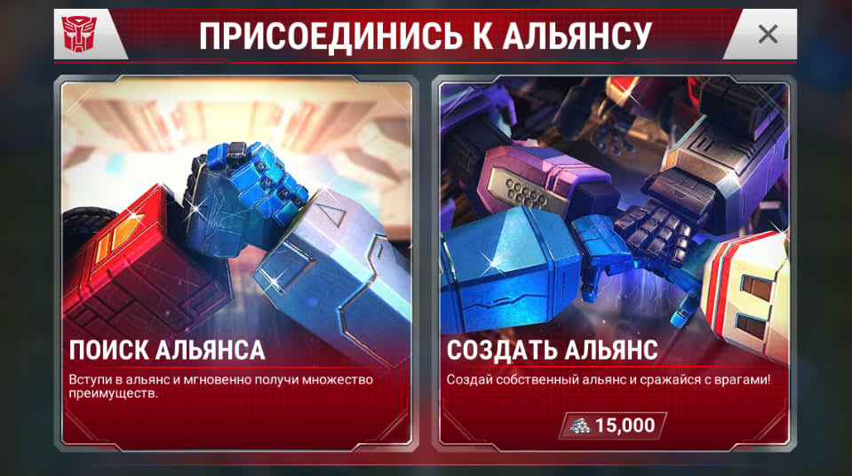
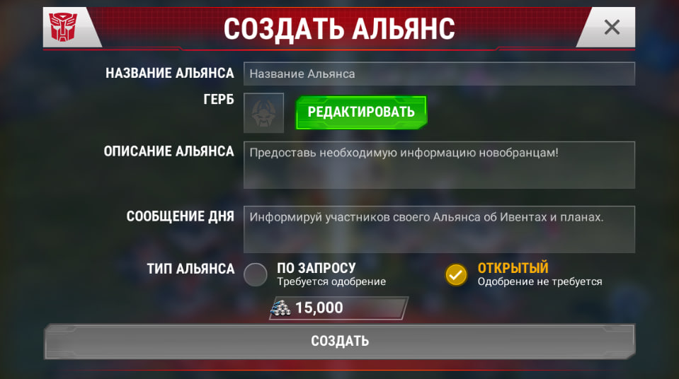

Вы можете найти кнопку альянса в правом нижнем углу, и нажатие этой кнопки на основном экране предоставит вам некоторые варианты. Если вы уже состоите в Альянсе, вы сможете просматривать такую информацию, как их таблица лидеров, роли участников, профиль Альянса и их военная лига.
Если вы по какой-либо причине чувствуете, что хотите покинуть Альянс, к которому вы присоединились, нажмите «Профиль» и «Выйти из Альянса». Как только это будет сделано, вы сможете создать или найти другой Альянс, и Альянс, который вы покинули, получит уведомление. Если вы являетесь командиром своего альянса, вам будет предложено назначить нового командира перед тем, как вы уйдете.
Чтобы найти другой альянс, нажмите «Найти альянс», и вам будет представлен список альянсов, в которых есть место для вас. Альянс будет иметь два разных типа. «Открыть» (что означает, что любой может присоединиться свободно, без согласия командира (лидера)), и «Запросить», что означает, что руководство Альянса должно одобрить вас, прежде чем вы сможете присоединиться.
Если вы хотите присоединиться к существующему альянсу, вам будет показан список рекомендуемых альянсов, или вы можете найти конкретный альянс с помощью функции поиска. Обратите внимание, что полный альянс не будет отображаться для вас.
Если вы не состоите в Альянсе, вам будет предложено два варианта; «Найти альянс» и «Создать альянс».
Если у вас HQ4+, вы сможете увидеть «Создать альянс», и это будет стоить вам: 15 000 сплавов.
Командиры и офицеры разделяют ответственность за лидерство в своем Альянсе. Таким образом, у них есть возможность добавлять/ удалять членов Альянса, обновлять «Сообщение дня» и вступать в войну Альянса.
Командир — командиры могут обновлять любые настройки альянса (эмблему альянса, описание, сообщение дня и тип альянса), добавлять/ удалять игроков из альянса, повышать игрока до роли офицера, вступать в войну альянса и выбирать сложность рейда.
Офицеры — Офицеры являются вторыми в команде и имеют возможность обновлять «Сообщение дня», добавлять / удалять игроков из Альянса и вступать в войну Альянса.
НововведениеЗащитники — командиры и офицеры могут назначать специальных защитников в Войнах Альянса, чтобы дать им (зданиям и роботам в постах) дополнительные здоровье и урон при обороне
Налётчики — командиры и офицеры могут назначать специальных атакующих в Войнах Альянса, чтобы дать им дополнительные здоровье и урон во время атаки
Новобранцы — командиры и офицеры могут назначать нескольких игроков в Войнах Альянса (в приоритете это новички альянса, либо игроки с слабой защитой), которые не будут попадать в защиту во время войны
Альянсы смогут принять участие в нескольких игровых режимах, которые будут проходить в течение всей недели.
Посетите нашу страницу игровых режимов, чтобы узнать больше о том, в чем может принять участие альянс!